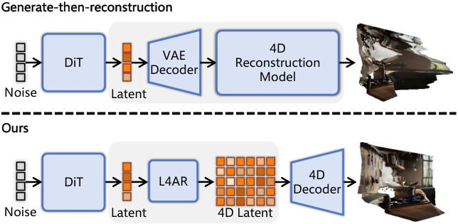
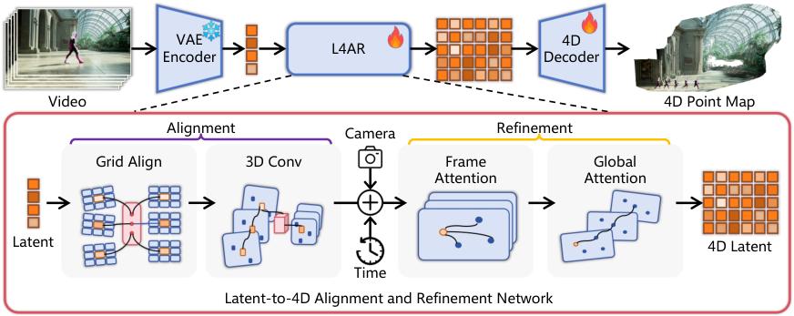
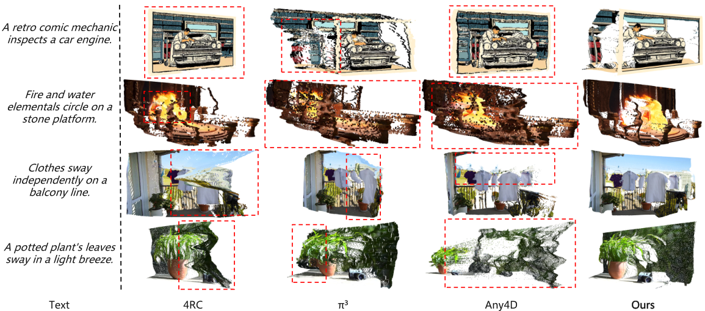
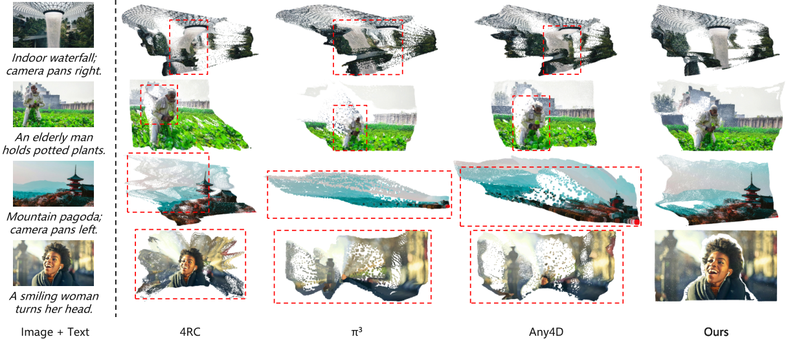
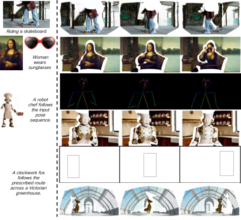
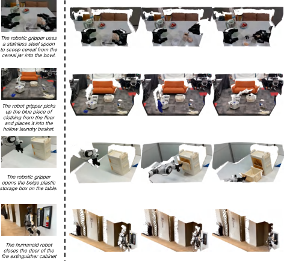

这篇论文来自浙大 ReLER / CCAI。它提出的问题比它的方法更值得记住。
做法:先合成多视角或时序的 RGB 观测,再由一个独立的重建模型转成显式动态场景。
论文指出的问题:它保留了生成器的模块性,但RGB 接口把「一个在窄得多(且往往只有重建数据)上单独训练的重建器」插在了视频先验与 4D 输出之间。开放域内容与时序伪影因此会传播成不稳定的几何——即 distribution mismatch + error propagation 的双重问题。
做法:让几何成为生成过程的原生输出——要么直接预测显式 4D 表示,要么联合建模 RGB 与几何视频。
论文指出的问题:先验转移更直接,但把 4D 预测绑死在某个特定生成器或条件协议上,于是「换一个预训练视频模型」就可能需要新的几何监督训练。

论文把「直接 latent-to-4D 生成」形式化为一个跨表示空间的映射:从视频 VAE 的 latent 空间映射到预训练 4D 重建器的结构化 token 空间。
记 $(E_{\mathrm{v}},D_{\mathrm{v}})$ 为某视频生成器的时空 VAE,$\mathcal{Z}_{\mathrm{v}}$ 为其 latent 空间。一个 video latent $\mathbf{z}_{\mathrm{v}}\in\mathcal{Z}_{\mathrm{v}}$ 编码了视频解码所需的外观与运动信息。而预训练的 4D 层级操作在一个结构化 token 空间 $\mathcal{Z}_{\mathrm{4D}}$ 上,其元素 $\mathbf{Q}\in\mathcal{Z}_{\mathrm{4D}}$ 支持相机与动态几何预测。
核心问题是要在不经过 RGB 的前提下桥接这两个表示空间。具体地,寻找一个对齐映射:
使得对齐后的 token $\mathbf{Q}^{(0)}$ 能被精修并解码为一个离散 4D 场景:
其中 $\mathbf{C}_{t}$ 是 $t$ 时刻的相机,$\mathbf{P}_{t}$ 是表达在共享世界坐标系下的稠密点图。这个表示同时刻画了时变几何与渲染新视角所需的相机轨迹。
常规的 generate-then-reconstruct 流水线预测的是:
其中 $D_{\mathrm{v}}$ 先把 video latent 解码成 RGB 帧,随后一个独立训练的重建器 $R$ 把这些帧抬升到 4D。论文指出:这条流水线引入了一个 RGB 表示边界,生成与解码的伪影可以穿过它传播到几何预测。
本文的目标则是学习一个直接映射 $\mathcal{Z}_{\mathrm{v}}\rightarrow\mathcal{Z}_{\mathrm{4D}}\rightarrow\mathcal{Y}$,同时绕过 RGB 解码与随后的 RGB 重编码。
| 符号 | 含义 | 备注 |
|---|---|---|
| $(E_{\mathrm{v}},D_{\mathrm{v}})$ | 视频生成的时空 VAE 编码器 / 解码器 | 本文用冻结的 Wan VAE |
| $\mathcal{Z}_{\mathrm{v}}$ | VAE latent 空间 | — |
| $\mathcal{Z}_{\mathrm{4D}}$ | 预训练 4D 重建器的结构化 token 空间 | 来自 4RC |
| $\mathbf{z}^{\mathrm{obs}}$ | 观测视频经 VAE 编码的 posterior-mean latent$\mathbf{z}^{\mathrm{obs}}=\mu(E_{\mathrm{v}}(\mathbf{V}))$ | 训练时用 |
| $\mathbf{z}^{\mathrm{gen}}$ | 兼容 video DiT 产生的最终去噪 latent$\mathbf{z}^{\mathrm{gen}}=G_{\theta}(c,\boldsymbol{\epsilon})$ | 推理时用 |
| $G_{\theta}$ | 兼容的 video DiT | Wan2.1-T2V-14B / 1.3B、Wan2.2-I2V-A14B |
| $\mathcal{A}_{\phi}$ | 对齐模块(可训练) | $\phi$ 为参数 |
| $\mathcal{R}$ | 固定的三线性重采样算子 | 对齐模块第一步,无参数 |
| $\mathcal{S}_{\phi}$ | 可学习的 3D 卷积 | 聚合局部时空邻域并把通道投到目标维度 |
| $\mathbf{Q}^{(0)}$ | 对齐后的 token | $\in\mathbb{R}^{T\times M\times d}$ |
| $T$ / $M$ / $d$ | 帧数 / 每帧空间 token 数 / token 维度 | — |
| $\mathcal{H}_{\psi,\Delta\psi}$ | 时空精修模块 | $\psi$ 冻结预训练权重,$\Delta\psi$ 轻量可训练更新 |
| $\mathbf{S}$ | 冻结的相机与时间 token | 复用预训练 4D 层级的 |
| $\mathcal{D}_{\omega}$ | 4D 解码器 | 预测逐帧相机与世界空间几何 |
| $\widehat{d}_{t}(u),\widehat{\mathbf{o}}_{t},\widehat{\mathbf{r}}_{t}(u)$ | 逐像素预测深度、世界射线原点与单位方向 | 带置信度 |
| $\widehat{\mathbf{C}}_{t}$ | 预测相机 | 用 9D 位姿–FOV 参数化 |
对任一来源的 latent $\mathbf{z}\in\{\mathbf{z}^{\mathrm{obs}},\mathbf{z}^{\mathrm{gen}}\}$,Latent-to-4D 把直接映射分解为对齐、时空精修、结构化 4D 解码三步:
| 阶段 | 输入的 latent | 被优化 | video DiT |
|---|---|---|---|
| 训练 | $\mathbf{z}^{\mathrm{obs}}$(真实视频编码) | 对齐模块 + 轻量精修更新 + 几何 / 相机头 | 既不执行也不优化 |
| 推理 | $\mathbf{z}^{\mathrm{gen}}$(DiT 最终去噪) | —(通路完全不变) | 只作为 latent 提供者 |
给定观测视频张量 $\mathbf{V}$,VAE 编码器给出 posterior-mean latent $\mathbf{z}^{\mathrm{obs}}=\mu(E_{\mathrm{v}}(\mathbf{V}))\in\mathcal{Z}_{\mathrm{v}}$(观测来源,训练用)。给定条件 $c$ 与采样噪声 $\boldsymbol{\epsilon}$,一个兼容的 video DiT $G_{\theta}$ 产生紧邻 VAE 解码之前的最终去噪 latent $\mathbf{z}^{\mathrm{gen}}=G_{\theta}(c,\boldsymbol{\epsilon})\in\mathcal{Z}_{\mathrm{v}}$(生成来源,推理用)。
论文对「兼容」给了明确清单。两个 latent 来源遵循同样的 VAE 缩放、张量布局与压缩约定,尽管它们的分布不必重合。兼容要求视频 DiT:① 共享同一 VAE checkpoint;② 共享 latent 归一化;③ 共享张量布局;④ 共享压缩约定;⑤ 以及一个受支持的 latent 形状。在此边界内,DiT 架构与条件协议可以不同——论文用一个 checkpoint 服务了两个 text-to-video DiT 与一个 image-to-video DiT。
VAE latent 不能被预训练 4D 层级直接消费,因为两个表示在时间分辨率、空间网格、特征维度三个维度上都不同。因此对齐分两步走:先把分辨率对上,再把特征空间对上。
把空间维度展平之后,对齐后的 token 为:
其中 $T$ 是帧数,$M$ 是每帧的空间 token 数,$d$ 是 token 维度。
| 项 | 内容 |
|---|---|
| ① 结构 | 输入 video latent $\mathbf{z}$(来自 $\mathbf{z}^{\mathrm{obs}}$ 或 $\mathbf{z}^{\mathrm{gen}}$)→ 固定三线性重采样 $\mathcal{R}$ → 可学习 3D 卷积 $\mathcal{S}_\phi$ → Flatten 空间维 → token $\mathbf{Q}^{(0)}\in\mathbb{R}^{T\times M\times d}$ |
| ② 数学 | 式(5) |
| ③ 前向流程 | ① 分辨率对齐(无参数);② 通道投影与局部时空聚合(可学习);③ 展平为 token 序列 |
| ④ 图示 | 见 §8 流程图 |
| ⑤ 监督 | 无独立监督,由式(7)的总损失端到端训练 |
论文引入一个层次化精修模块,结合逐帧与全局的时空自注意力。给定形状为 $(B,T,M,d)$ 的 token:
| 注意力类型 | reshape 后形状 | 作用 |
|---|---|---|
| 逐帧注意力(frame-wise) | $(BT,M,d)$ | 在每一帧内部整合空间结构 |
| 全局注意力(global) | $(B,TM,d)$ | 在所有空间位置与时间步之间交换信息 |
层次结构的工作方式是:先通过逐帧注意力建立逐帧结构,然后交替两种注意力模式,让全局块传播对应关系、视角与运动证据,而穿插其间的逐帧块保留细致的空间结构。
论文在层级中的多个深度收集中间表示:在每个选定深度,把最近的逐帧特征与全局特征拼接,组成一个多层级表示,其中既包含空间细节也包含序列级上下文。这个表示被交给 4D 解码器,提供互补的帧内几何与跨帧运动线索。
精修模块的权重构成是本文「低成本复用」的关键:
| 部分 | 状态 | 说明 |
|---|---|---|
| $\psi$:预训练 Transformer 权重 | 冻结 | 来自 4RC 的 31 块精修层级 |
| $\Delta\psi$:轻量可训练更新 | 可训练 | rank-16 LoRA |
| 相机与时间 token $\mathbf{S}$ | 冻结 | 复用预训练 4D 层级的 |
| 对齐模块 $\mathcal{A}_{\phi}$ + 预测头 | 可训练 | 从初始化开始训 |
| video 生成器 / VAE / 原始 Transformer 权重 / 运动解码器 / 跟踪头 | 冻结 | 论文明确列出 |
4D 解码器把精修后的特征层级转换成显式的动态场景结构。对每一帧 $t$ 与每个像素 $u$,一个多层级几何头预测:
按解码器的射线参数化,对应的世界空间点按式(6)恢复:
与几何头并行,一个相机头通过 9D 位姿–视场角参数化预测 $\widehat{\mathbf{C}}_{t}$。设计动机与前文一致——预测的相机与动态点图共同构成 $\widehat{\mathcal{Y}}$,它可以跨视角与跨时间重投影,而不局限于输入视频的观测。
给定一个带标注的序列 $(\mathbf{V},\mathcal{Y})$,冻结的 VAE 产生 $\mathbf{z}^{\mathrm{obs}}$,latent-to-4D 通路由下式监督:
| 项 | 组成 |
|---|---|
| $\mathcal{L}_{\mathrm{unc}}$ | 不确定性感知项:包含置信度加权的深度损失、深度梯度损失、世界射线损失 |
| $\mathcal{L}_{\mathrm{cam}}$ | 监督相机平移、旋转与视场角 |
| $\mathcal{L}_{\mathrm{geom}}$ | 结合度量深度与射线监督,加上世界空间点上的均值与尾部误差,以及一项表面法线损失 |
这些目标共同训练对齐模块、轻量精修更新以及几何与相机头,全部来自度量的 4D 标注。
| 项 | 内容 |
|---|---|
| ① 结构 | 多层级融合特征 → 几何头(深度 + 射线原点 + 单位方向 + 各自置信度)→ 世界点;并行相机头(9D 位姿–FOV) |
| ② 数学 | 式(6)点恢复;式(7)总损失 |
| ③ 前向 | 精修特征 → 逐帧逐像素预测 → 按射线参数化恢复世界点 → 输出 $\widehat{\mathcal{Y}}=\{(\widehat{\mathbf{C}}_t,\widehat{\mathbf{P}}_t)\}$ |
| ④ 图示 | 见 §8 流程图 |
| ⑤ 监督 | 式(7)的三项损失,均来自度量 4D 标注 |

hayd-zju/Beyond-Pixels 存在(仓库大小仅 16 KB,pushed 2026-08-16),但根目录只有一个 README.md(6,430 字节),没有任何源码。因此本节数值全部来自论文正文,无 file:line 级佐证。凡论文未写明的项,一律标「未给出」,不估计。
| 项 | 取值 | 出处 |
|---|---|---|
| 冻结的 VAE | Wan VAE(冻结) | §Experimental Setup |
| 精修层级 | 初始化自 4RC 的 31 块层级 + 预测头 | §Experimental Setup |
| 对齐模块 | 固定三线性重采样 $\mathcal{R}$ + 可学习 3D 卷积 $\mathcal{S}_\phi$ | §Method (L4AR) |
| 精修适配 | rank-16 LoRA(适配精修层级) | §Experimental Setup |
| 可训练部分 | 对齐模块 + 预测头 + 精修层级的 LoRA | §Experimental Setup |
| 冻结部分 | video 生成器、VAE、原始 Transformer 权重、相机与时间 token、运动解码器、跟踪头 | §Method (Training Objective) |
| 训练数据起点 | 「从一个 4RC 对齐的 latent 适配器出发」 | §Experimental Setup |
| 最终阶段训练数据 | 1,143 条 clip,来自六个重建数据集 | §Experimental Setup |
| 训练阶段 | 多阶段几何监督训练(论文未给出各阶段的迭代数与数据组成) | §Experimental Setup |
| 测试期适配 | 无(所有 benchmark 均留出) | §Experimental Setup |
| 优化器 / 学习率 / batch size / 迭代数 | 论文未给出(称「完整架构与训练细节见附录」) | — |
| 参数量 | 未给出 | — |
| 项 | 说明 |
|---|---|
| Text4D-200 | 锁定的 200 例文本条件 benchmark,每个方法都在每一例上评测 |
| I4D-200 | 锁定的 200 例图像条件 benchmark,同上 |
| 指标 | Text CLIP、RGB 参考 CLIP-I、DINO 全局相似度、有效 patch 的 DINO 匹配、DINO 集合 F1 |
| 评测方式 | 把每个预测的点序列从两台离轴相机渲染后计算 |
| RGB 的用途 | 仅用于评测与着色,不作为几何输入(论文明确声明) |
| 指标性质 | 离轴 DINO 分数是「可见几何一致性与完整性的外观相关代理,不是度量 4D 精度」 |
| 类别 | 方法 |
|---|---|
| 本文服务的目标生成器 | Wan2.1-T2V-14B、Wan2.1-T2V-1.3B、Wan2.2-I2V-A14B(共享冻结的 Wan VAE)。一个 checkpoint 全部服务 |
| 额外的文本视频生成器 | CogVideoX-5B |
| generate-then-reconstruct 基线 | 把对应 latent 解码后用 4RC、π³、或 Any4D 重建 |
| 原生 Image-to-4D 基线 | 官方 4DNeX |
| 受控对比 | 「Ours vs 匹配的 Wan 级联」是同 latent 的受控比较(即两者用同一个生成 latent) |
两视图投影分数(×100,越高越好)。Ours 与匹配的 Wan 级联共享同一个生成 latent。
| 方法 | Text CLIP ↑ | RGB-ref. CLIP-I ↑ | DINO 全局 ↑ | DINO 匹配 ↑ | DINO F1 ↑ |
|---|---|---|---|---|---|
| Text-to-4D | |||||
| CogVideoX-5B + 4RC | 26.887 | 75.33 | 42.71 | 53.47 | 53.27 |
| CogVideoX-5B + π³ | 26.293 | 74.84 | 38.74 | 50.29 | 49.72 |
| CogVideoX-5B + Any4D | 25.414 | 72.66 | 29.46 | 45.97 | 45.12 |
| Wan2.1-14B + 4RC | 28.116 | 71.20 | 42.45 | 54.31 | 53.56 |
| Wan2.1-14B + π³ | 26.594 | 68.70 | 34.79 | 48.69 | 47.50 |
| Wan2.1-14B + Any4D | 26.261 | 67.56 | 29.97 | 46.80 | 45.55 |
| Wan2.1-1.3B + 4RC | 27.829 | 71.34 | 43.30 | 54.97 | 54.21 |
| Wan2.1-1.3B + π³ | 27.034 | 70.23 | 38.51 | 51.23 | 50.10 |
| Wan2.1-1.3B + Any4D | 26.326 | 68.19 | 31.00 | 47.26 | 46.06 |
| Ours(Wan2.1-14B) | 28.544 | 72.24 | 45.43 | 57.52 | 57.01 |
| Ours(Wan2.1-1.3B) | 28.434 | 72.32 | 46.02 | 57.64 | 57.09 |
| Image-to-4D | |||||
| 4DNeX | 22.844 | 61.11 | 11.31 | 30.53 | 28.33 |
| Wan2.2-I2V-A14B + 4RC | 26.340 | 70.55 | 47.83 | 56.25 | 55.79 |
| Wan2.2-I2V-A14B + π³ | 24.678 | 66.65 | 33.50 | 45.08 | 43.82 |
| Wan2.2-I2V-A14B + Any4D | 24.362 | 65.30 | 27.21 | 43.54 | 42.17 |
| Ours | 27.340 | 72.87 | 54.85 | 61.85 | 61.60 |
| 论文表述 | 按 Table 1 复核 | 结论 |
|---|---|---|
| Text4D-200 上比匹配 Wan+4RC 高 2.88–3.45 DINO-F1 | 14B:57.01−53.56=3.45;1.3B:57.09−54.21=2.88 | ✅ 一致 |
| I4D-200 上高 5.81 DINO-F1 | 61.60−55.79=5.81 | ✅ 一致 |


| 项 | 设置 |
|---|---|
| 参与者 | 50 人 |
| 样本量 | 每个 benchmark 抽 50 个案例 |
| 形式 | 随机化、匿名化的成对比较 |
| 操作自由度 | 可以重放运动、检查多个视角后再判断 |
| 四个判断维度 | 条件保真度、几何与完整性、时序稳定性、整体质量 |
| 评审强度 | 每个案例收到 10 个评分 |
| 报告方式 | 案例平均偏好率 + 95% bootstrap 置信区间 |
| 任务 | 条件保真度 ↑ | 几何与完整性 ↑ | 时序稳定性 ↑ | 整体质量 ↑ |
|---|---|---|---|---|
| Text-to-4D | 59.2% [54.1–64.3] | 66.8% [62.0–71.5] | 63.5% [58.4–68.5] | 65.7% [60.8–70.5] |
| Image-to-4D | 66.4% [61.8–70.9] | 72.1% [67.8–76.3] | 68.3% [63.7–72.8] | 70.6% [66.2–74.9] |
表中数值为「偏好 Ours 而非基线的比例(%)」,方括号为 95% bootstrap 置信区间。
论文对这套人类评测的定位说得很清楚:「这些判断支持更合理、更稳定的 4D 输出,但不度量度量几何。」也就是说,人类偏好与 DINO 分数一样,都是互补证据,而非精度证明。
在 7-Scenes(18 个场景)与 NRGBD(9 个场景)上评测。Acc 与 Comp 单位为 cm,越低越好;NC(法线一致性)越高越好。
| 变体 | 7-Scenes(18) | NRGBD(9) | ||||
|---|---|---|---|---|---|---|
| Acc ↓ | Comp ↓ | NC ↑ | Acc ↓ | Comp ↓ | NC ↑ | |
| w/o Grid | 3.783 | 6.844 | 0.608 | 5.823 | 9.686 | 0.726 |
| w/o 3D Conv | 6.944 | 15.806 | 0.554 | 12.439 | 26.511 | 0.594 |
| w/o Frame | 6.688 | 20.806 | 0.513 | 12.367 | 36.982 | 0.502 |
| w/o Global | 6.754 | 19.742 | 0.559 | 13.818 | 36.207 | 0.515 |
| Full | 3.121 | 5.418 | 0.628 | 5.202 | 8.187 | 0.766 |
| 变体 | ΔAcc(7-Scenes) | ΔComp(7-Scenes) | ΔComp(NRGBD) | 解读 |
|---|---|---|---|---|
| w/o Grid | +0.662 | +1.426 | +1.499 | 影响最小——去掉网格对齐只带来轻微退化 |
| w/o 3D Conv | +3.823 | +10.388 | +18.324 | 对 Acc 影响最大(3.121→6.944,恶化 122%) |
| w/o Frame | +3.567 | +15.388 | +28.795 | 对 Comp 影响最大(5.418→20.806,恶化 284%) |
| w/o Global | +3.633 | +14.324 | +28.020 | 与 w/o Frame 接近,略好 |
这是一个设计得很精巧的诊断,用来回答关键疑虑:推理时的 $\mathbf{z}^{\mathrm{gen}}$ 与训练时的 $\mathbf{z}^{\mathrm{obs}}$ 分布不同,那么这条通路对「DiT 特有的成分」有多敏感?
做法是把经验上的近终点残差 $\mathbf{z}_{45}-\mathbf{z}_{50}$ 投影到 Grid-Align 的宽度零空间(width-null space) 上,再加到一个观测视频的 latent 上,并对两条通路施加相同的扰动(构造细节在附录)。
| 结果 | 数值 |
|---|---|
| 比较次数 | 30 次,全部 30 次都偏好 Ours |
| $\rho=0.6$ 时的点图漂移(Ours) | 0.0053(7-Scenes)/ 0.0047(NRGBD) |
| $\rho=0.6$ 时的点图漂移(基线) | 0.3827(7-Scenes)/ 0.3160(NRGBD) |
| 相机估计 | 呈相同趋势 |
—。
| 方法 | 年份 | 范式 | 输入假设 | 场景表示 | 监督信号 | 训练数据 | 训练时长 | 推理耗时 | 显存 | 关键指标(Text4D-200 / I4D-200) | 开源 |
|---|---|---|---|---|---|---|---|---|---|---|---|
| 4RC(主要基线) | 2026 | generate-then-reconstruct | RGB 视频(由生成 latent 解码而来) | 相机 + 动态点图 | 度量 4D 标注 | 重建数据集 | — | — | — | Wan2.1-14B+4RC:53.56 DINO-F1;I2V+4RC:55.79 | — |
| π³ | 2026 | generate-then-reconstruct | RGB 视频 | 相机 + 稠密点图 | 重建监督 | 重建数据集 | — | — | — | Wan2.1-14B+π³:47.50;I2V+π³:43.82 | 是(库内笔记 Pi3) |
| Any4D | 2025 | generate-then-reconstruct | RGB 视频 | 动态点图 / 场景流 | 重建监督 | 重建数据集 | — | — | — | Wan2.1-14B+Any4D:45.55;I2V+Any4D:42.17 | — |
| 4DNeX | 2025 | integrated feed-forward(原生 I2D) | 单张图 | 动态点云 | 几何监督 | — | — | — | — | I4D-200:28.33 DINO-F1(显著低于级联基线) | — |
| CogVideoX-5B 级联 | 2025 | generate-then-reconstruct | 文本 → 视频 → RGB | 相机 + 点图 | 重建监督 | — | — | — | — | Text4D-200:53.27(+4RC);CLIP-I 75.33 为全表最高 | 是(见 CogVideoX) |
| Latent-to-4D(本文) | 2026-08 | 直接 latent-to-4D(绕过 RGB) | 共享同一 VAE 约定的任意兼容 DiT 的最终去噪 latent;text / image / 动作 / 轨迹条件均可 | 相机 + 动态世界点图 | $\mathcal{L}_{\mathrm{unc}}+\mathcal{L}_{\mathrm{cam}}+\mathcal{L}_{\mathrm{geom}}$,来自度量 4D 标注 | 约 1K clip(最终阶段 1,143 条,6 个重建数据集) | 未给出 | 未给出 | 未给出 | Text4D-200:57.01 / 57.09;I4D-200:61.60 | 仅 README |
绝大多数工作优化的是模型;这篇优化的是模型之间的接口。因为接口一旦对了,几何监督就能从「每个生成器一次」变成「一次服务所有」。在 4D 监督稀缺的前提下,这个杠杆可能比模型改进更大。
约 1K clip 就能训出可跨三个 DiT 迁移的接口,因为生成能力由冻结的上游提供。相比之下,4DAnyone 需要 38k 合成视频 + 128 张 H20 训骨干。
论文主动声明「CLIP-I 不占优」「DINO 不是度量精度」「诊断只隔离一个残差成分」「验证的是设计而非 OOD 优势」。共四处自我限定,在本库读过的论文里属于最克制的一档。
| 范式 | 代表方法 | 核心先验 / 接口 | 局限 |
|---|---|---|---|
| 逐资产 SDS 优化 | DreamFusion 系、4D-fy、DreamGaussian4D | 2D / 视频扩散当 score 函数,逐资产优化动态 NeRF / 高斯 | 每个输出都要单独优化,慢 |
| generate-then-reconstruct | Diffusion4D、4Diffusion、CAT4D、Any4D、4RC、π³ | 先生成多视角 / 时序 RGB,再由独立重建器抬升 | RGB 接口引入分布错配与误差传播 |
| integrated feed-forward | 4DNeX、Diff4Splat、WorldReel、WorldForge | 让生成器直接输出几何或联合预测 RGB+几何 | 绑死在特定生成器与条件协议上,换模型需重训几何 |
| 任务专用感知复用 | VIST3A(把视频 VAE 接静态 3D 重建器) | 把一个生成器改造成任务专用感知模型 | 针对单一选定的模型对做对齐,不追求跨生成器 |
| 直接 latent-to-4D(可复用接口) | Latent-to-4D | 把「共享 VAE 的最终去噪 latent」当作接口;一次几何监督服务多个兼容 DiT | 仅限同 VAE 家族;无度量精度证据;尚未见人体专用版本 |


判断基准:本库主线为单卡 RTX 3090(24GB)、WSL2、12–16 路中等稀疏可控场景、目标人体,链路是 COLMAP → 3DGS → HYPIR → SAM3。Latent-to-4D 面向的是通用 4D 场景生成,与我们的场景有明显距离。
| 维度 | Latent-to-4D 的情况 | 与我们的匹配度 |
|---|---|---|
| 核心前提:共享 VAE | 要求生成器与重建器共享同一 VAE checkpoint、归一化、布局、压缩约定 | 我们的链路里不存在任何共享 VAE 的模型对(HYPIR / SAM3 / 3DGS 各成体系)。这条前提目前不成立 |
| 目标输出 | 相机 + 动态世界点图 | 我们的目标是 3DGS 拆分(head / body / scene)与 avatar,表示不同 |
| 人体支持 | 无人体专用验证 | 无法直接迁移 |
| 训练成本 | 约 1K clip,LoRA rank-16 | 思路可借鉴——「用极小的适配层接住一个大模型的表示」是我们 pipeline 里反复出现的模式 |
| 生成器冻结 | 完全不训练 video DiT | 与我们的偏好一致(不重训大模型) |
| 可复现性 | 仓库仅 16 KB README,无源码 | 不可用 |
| 资源账 | GPU / 耗时 / 显存全缺 | 无法评估 |
[高优先级] 消融缺少「RGB 中介」这一直接对照组。
问题:全文的核心主张是「绕过 RGB 优于经过 RGB」,但消融表(Table 3)的四个变体全是在 latent 通路内部做减法(w/o Grid / 3D Conv / Frame / Global),没有任何一行是「把 latent 先解码成 RGB、再用同样的 4D 解码器处理」。
佐证:Table 3 的变体清单见 §12.1;论文在 §Diagnostic Analyses 里也承认这组消融「验证的是设计,而不是声称在重建的分布外上取得优势」。
改进建议:补一行「Latent → VAE 解码 → RGB → 用同一套 4D 解码器(或一个 RGB 编码器)」的对照,保持其他一切不变(同 latent、同数据、同迭代数)。这是唯一能把「绕过 RGB 的收益」从主表的间接推断变成直接测量的实验。它的成本很低——因为论文已经有 4RC 这类 RGB 重建器,只需把它的输入换成「同一条 latent 解码出的 RGB」。
[高优先级] 训练用 $\mathbf{z}^{\mathrm{obs}}$、推理用 $\mathbf{z}^{\mathrm{gen}}$ 的分布 gap 只被「一个特定残差」刻画。
问题:论文自己承认两个 latent 来源的分布「不必重合」。唯一的诊断实验只隔离了「近终点残差投影到宽度零空间」这一种成分,并明确声明「这隔离的是一个残差成分,而不是任意的 DiT 误差」。那么真实 DiT 误差的其余部分会造成什么影响?没有测量。
改进建议:① 做一个分布距离的定量刻画(如 $\mathbf{z}^{\mathrm{obs}}$ 与 $\mathbf{z}^{\mathrm{gen}}$ 在各通道上的均值/方差/协方差差异),让读者知道 gap 有多大;② 做一组受控退化实验:把 $\mathbf{z}^{\mathrm{obs}}$ 人为加噪或做 VAE 往返(encode→decode→encode),测 DINO-F1 随退化程度的变化——这样能给出「latent 质量 → 4D 质量」的敏感度曲线。
[中优先级] 「换生成器不重训」的验证只覆盖了同一 VAE 家族内的三个 DiT,缺少边界案例。
问题:论文的三个目标生成器是 Wan2.1-T2V-14B、Wan2.1-T2V-1.3B、Wan2.2-I2V-A14B,全部来自 Wan 家族、共享同一个 VAE。真正的压力测试应该是:① 一个不同架构但共享 VAE 的 DiT(如果存在);② 一个故意偏离一点 VAE 约定的模型(如不同的 latent 归一化),看退化到什么程度。
改进建议:补一组「VAE 约定被扰动」的实验——按通道改缩放系数、改 latent 通道顺序、改时间压缩比——给出「约定偏离度 × DINO-F1」的曲线。这能告诉使用者这条接口的容差有多少,而这恰恰是工程上最需要的信息。
[高优先级] 全部指标都是外观相关代理,没有度量精度。
问题:Text4D-200 / I4D-200 用 Text CLIP、CLIP-I、DINO 族评估,论文自己承认「无法为生成场景建立度量精度」。这意味着这套评测无法回答「生成的 4D 场景的尺度/位置对不对」。
值得注意的是:论文有度量几何的证据能力——Table 3 的 7-Scenes / NRGBD 上的 Acc / Comp / NC 就是度量指标。但那只用于消融,没有用于主对比。
改进建议:把 Table 3 的度量协议也用在「Ours vs RGB 级联」的主对比上(哪怕只在有 GT 的少数场景上)。这样就能把主结论从「外观代理更优」提升为「度量几何更准」,论证强度会有质的变化。
[中优先级] 两个 benchmark 是「构造的 200 例」,其来源与难度分布未说明。
问题:Text4D-200 与 I4D-200 被描述为「锁定的 200 例」,但论文正文没有说明这些案例从哪里来、如何挑选、覆盖哪些难度(说「构造与指标定义见附录」)。一个锁定但来源未公开的 benchmark,其可比性只在论文内部成立。
改进建议:公开 benchmark 的构造脚本与案例清单。这样后续工作才能真正在同一协议上比较——这也是「锁定 200 例」这一良好初衷的必要配套。
[高优先级] 仓库只有 README,16 KB。
问题:论文的核心贡献是一个网络结构 + 一套对齐方法(L4AR),这些东西没有代码几乎无法复现——尤其是「固定三线性重采样 + 3D 卷积」的具体尺度参数、「多层级特征在哪些深度收集」这类细节,论文文字描述不足以还原。
改进建议:即使只放出 L4AR 模块本身(不含上游生成器与 4RC 权重),也能让社区验证「对齐方法」这一核心贡献。
[中优先级] 资源账全缺。
问题:GPU 型号数量、训练总时长、推理耗时、显存、参数量——一个都没有。虽然训练数据只有 1K clip 是个好信号,但「1K clip 要训多久」恰恰决定了它能否被小团队复现。
改进建议:参照同领域已开源工作的做法给出逐阶段耗时表。本库里 StudioRecon 的 Table S1 就是一个可直接照抄的模板(视图合成 50 min / 人体位姿 3 min / 背景重建 30 min / 人体重建 40 min / 增强 3.3 s per frame,端到端 130 min 单卡)。
| 优先级 | 改进点 | 理由 |
|---|---|---|
| [高] | 缺「RGB 中介」直接对照组 | 核心主张缺少直接实验证据,只能从主表间接推断 |
| [高] | latent 分布 gap 只测了一个特定成分 | 这是设计成立与否的根本假设 |
| [高] | 主对比缺度量精度 | 论文已有度量协议,却只用于消融 |
| [高] | 仓库无代码 | 核心贡献不可复现 |
| [中] | 兼容性边界未做压力测试 | 「约定偏离多少还能用」是工程最需要的信息 |
| [中] | benchmark 来源未公开 | 影响跨论文可比性 |
| [中] | 资源账全缺 | 决定能否被小团队复现 |
这五篇论文合起来正好覆盖了「视频生成驱动 4D」这条链路上的不同环节,把它们放在一起看能看清各自的位置:
| 环节 | 论文 | 它优化的是什么 |
|---|---|---|
| 生成侧(上游) | 4DVD | 用级联解耦把「布局」与「外观」分开,换取更多视角 |
| 生成侧(上游) | Flex4DHuman | 去掉一切几何先验,只用相对相机位姿驱动多视角生成 |
| 生成侧(上游) | 4DAnyone | 把瓶颈诊断为「有界注意力上下文」,用 RCP + TCR 做上下文工程 |
| 接口层 | Latent-to-4D(本文) | 上游与下游之间该传递什么表示——答案是 latent 而不是 RGB |
| 重建侧(下游) | StudioRecon | 把生成与几何的组合方式设计对:背景交生成、人体交 SMPL,并用可信度加权 |
| 监督回路 | AHOY! | 把生成放进训练回路,当作未观测区域的监督源,并设计机制吸收其不一致 |
Zihao Liu · Xiaolong Shen · Zhenglin Zhou · Ruijie Quan · Yi Yang(通讯作者)。全部来自 ReLER, CCAI, Zhejiang University。
ReLER 是浙大在视觉与学习领域长期活跃的实验室,与库内 4DAnyone 同属浙大体系(不同组)。本库的 3D 与视频生成相关笔记里,浙大来源的比例值得留意。
github.com/hayd-zju/Beyond-Pixels 存在,描述为「Official repository for Beyond Pixels: From Video Priors to 4D Worlds」,但仓库大小仅 16 KB,根目录只有 README.md(6,430 字节)——无源码、无权重、无推理脚本。会议状态:arXiv abs 的 comments 字段仅给出项目页,无会议标注,故本笔记不加会议徽章。